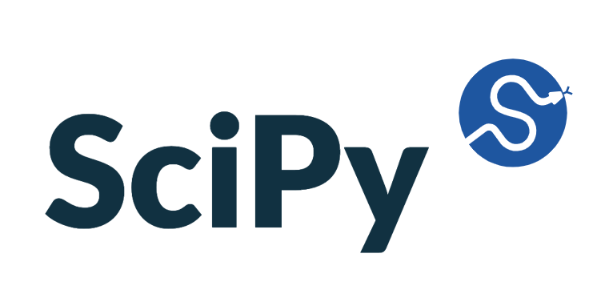

Análisis basado en datos para maximizar los ingresos de Megaline Telecom
En este proyecto analicé el comportamiento de los clientes y los patrones de ingresos de Megaline, una empresa de telecomunicaciones que ofrece dos planes prepago: Surf y Ultimate. Utilizando datos reales de clientes, apliqué técnicas avanzadas de limpieza de datos, creación de variables (feature engineering) y pruebas de hipótesis para identificar cuál de los planes genera mayor rentabilidad. El proyecto combinó una visión estratégica de negocio con rigurosidad estadística, proporcionando recomendaciones basadas en datos para orientar las decisiones de marketing y optimización de ingresos.





Conclusiones
Los resultados revelaron que el plan Ultimate supera consistentemente al plan Surf en generación de ingresos, principalmente debido a un mayor consumo de datos y servicios de llamadas. No se encontraron diferencias regionales significativas, lo que sugiere que los patrones de comportamiento de los clientes son consistentes en todos los mercados. Estos insights permitieron a Megaline optimizar su estrategia publicitaria, enfocarse en clientes de alto valor y tomar decisiones basadas en evidencia para impulsar el crecimiento de la compañía.
Revisa mi proyecto completo en mi GitHub
 Revisa mi GitHub
Revisa mi GitHub